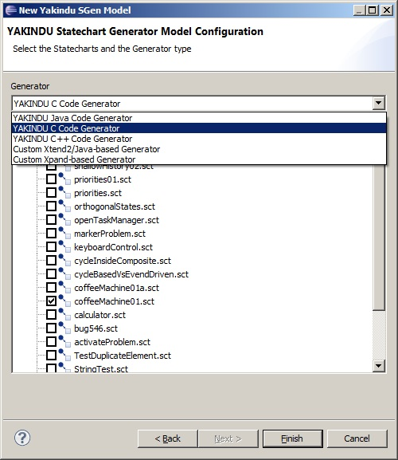

For configuring the code generation process, YAKINDU Statechart Tools uses a textual generator model called SGen. It can be created either by using the provided wizard Yakindu Statechart Generator Model or by creating a new text file with the file extension ‚.sgen’.
To create a generator model with the wizard,

The result is an .sgen file of the following format:
GeneratorModel for [GeneratorId] {
statechart [StatechartReference] {
feature [Feature] {
[ParameterName] = [ParameterValue]
}
}
}
The [GeneratorId] is the unique id of the Generator. Currently, the following Generators are supported out of the box:
One GeneratorModel can contain several [StatechartReference]s. These are cross references to statechart models for which the code should be generated. For each reference, the generator process can be configured with [Feature]s. Each Feature consists of several parameters. These parameters can be configured with [ParameterName] = [ParameterValue].
The Generator Model is executed by a builder. Thus, the artifacts are generated automatically if Project > Build Automatically is checked. If you want to execute your Generator Model by hand, select Generate Statechart Artifacts from the Package Explorer’s context menu.